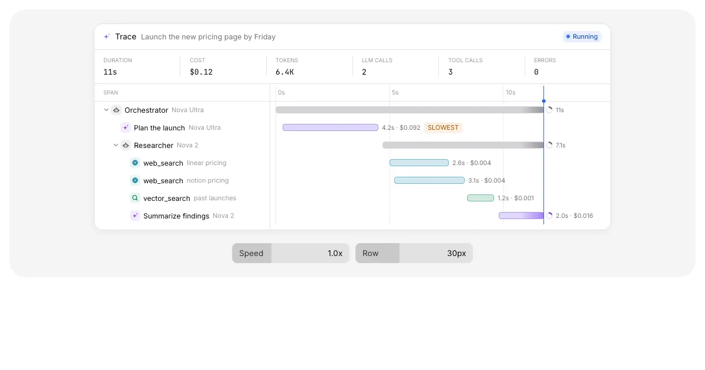

Trace Waterfall
A run's trace as a waterfall: summary strip, folding span tree, bars by kind on a time axis with duration and cost, the slowest call tagged, a live now-line and hover details.

Usage
Add glowkit next to eframe:
cargo add glowkit eframeThen draw it inside any egui Ui:
use glowkit::prelude::*;
use glowkit::agents::{TraceSpan, SpanKind, TraceWaterfall};
let spans = vec![
TraceSpan::new("Orchestrator", SpanKind::Agent, 0, 0.0).dur(17.5),
TraceSpan::new("Plan the launch", SpanKind::Llm, 1, 0.3).dur(4.2).usage(3900.0, 0.092),
TraceSpan::new("web_search", SpanKind::Tool, 1, 4.7), // still running
];
ui.add(TraceWaterfall::new(&spans).title("Launch the pricing page").now(t));Prefer to own the code? The glowkit CLI copies this component's source into your project, shadcn-style:
cargo install glowkit-cli
glowkit add trace-waterfallEquivalent to
If you know this pattern from affectUI and ReUI, Trace Waterfall is the Rust version: an original egui implementation, not a port, that runs natively and in WebAssembly.
- Trace WaterfallaffectUI
- Cost WaterfallaffectUI
- Run Step TraceReUI
About Trace Waterfall
Trace Waterfall is one of 84 components in glowkit's AI category. It lives in the glowkit-agents crate, enabled by the agents feature of glowkit (on by default). It reads its colors from the active glowkit theme, so it matches the rest of your app in light, dark or a custom brand theme, and every color, size and timing has a setter to override it.
Everything an AI app needs on screen: streaming Markdown chat, prompt inputs with attachments, reasoning and chain-of-thought panels, tool calls with live arguments, approvals, diff review, traces, agent trees, run monitors, cost and context meters, voice orbs and MCP server managers. Pair them with glowkit-stream to drive them from a real AG-UI, Vercel AI SDK, ACP, rig or OpenAI-compatible stream.